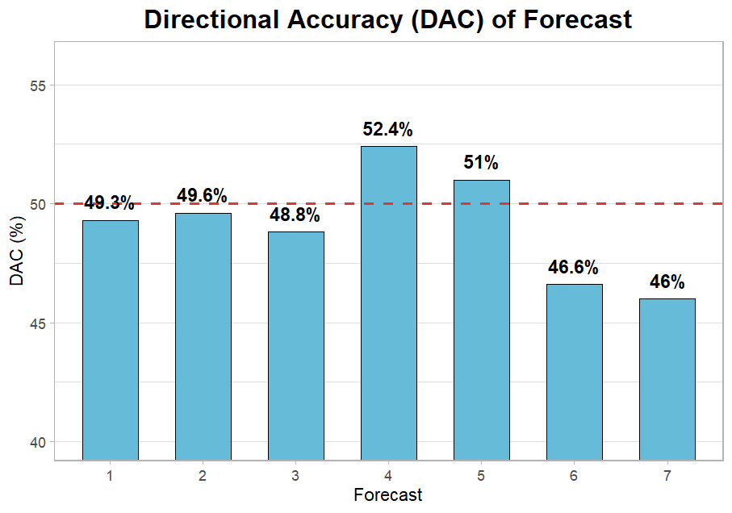
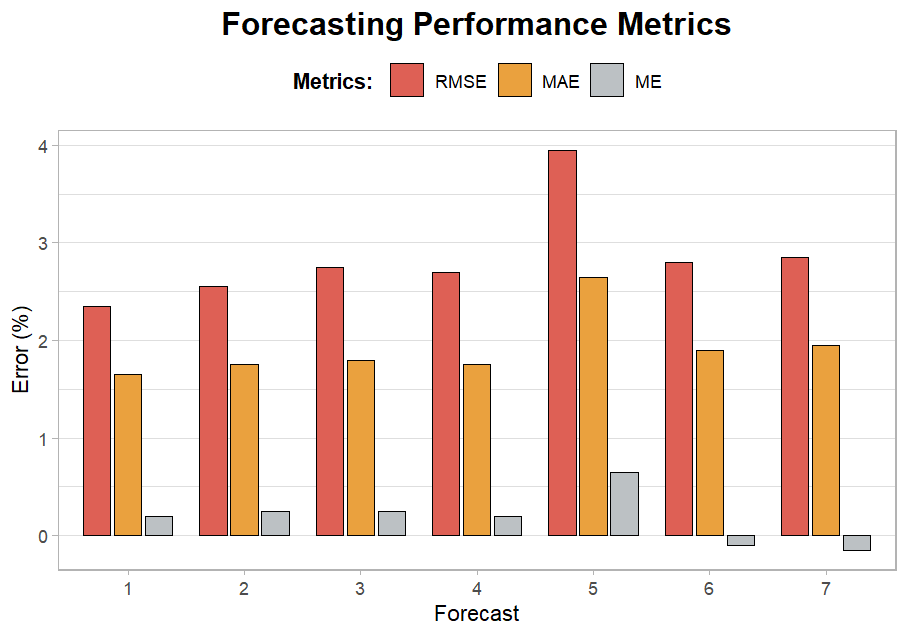
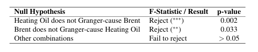
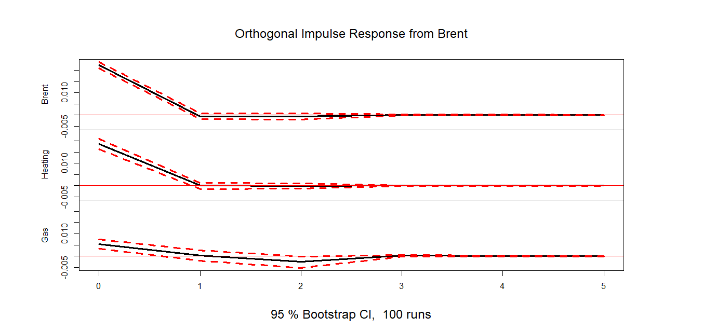
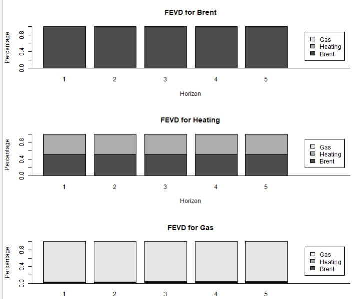
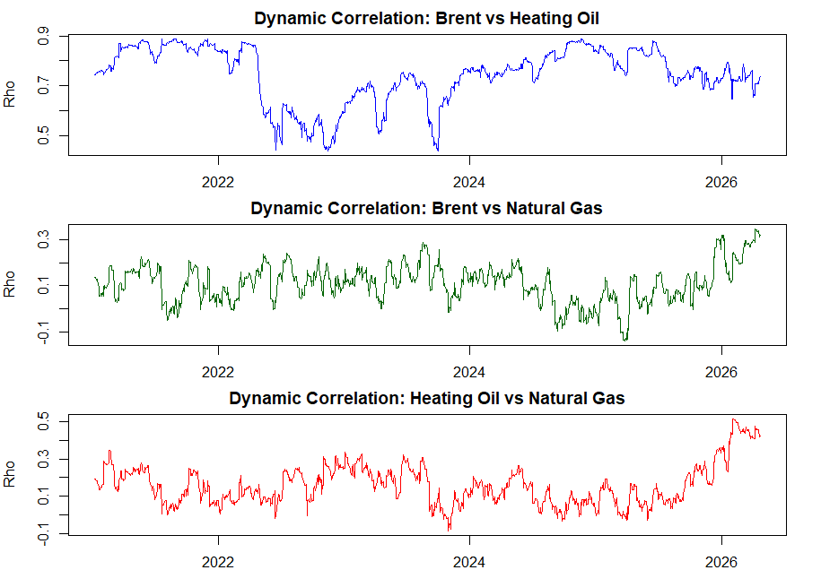

# A Whirlwind Tour of <br><span style="color: var(--accent);">Energy Markets</span> ### Forecasting • Interdependency • Capital Efficiency **Group:** ARMAdilli | **Date:** May 2026 --- ## 1. Introduction & Context <div class="grid-2"> <div> <h3>Market Environment</h3> <p>The 2021-2026 period redefined energy stability. Markets are now in a <b>permanent stress regime</b>.</p> <ul> <li><strong>Geopolitical Shocks:</strong> Ukraine (2022) and Hormuz (2026).</li> <li><strong>Objective:</strong> Shift to <b>Risk Management (VaR)</b>.</li> </ul> </div> <div class="box"> <h4 style="color: var(--accent); margin:0; font-size:0.9em;">Operational Goal</h4> <p>Optimize capital allocation by quantifying extreme loss quantiles.</p> </div> </div> --- ## 2. Literature Review <div class="grid-2"> <div class="stat-card"> <i class="fa-solid fa-chart-line" style="font-size:2em; color:var(--accent);"></i> <h3>Engle (2002)</h3> <p><b>DCC-GARCH:</b> Modeling time-varying correlations during market coupling.</p> </div> <div class="stat-card"> <i class="fa-solid fa-diagram-project" style="font-size:2em; color:var(--accent);"></i> <h3>Diebold & Yilmaz</h3> <p><b>Connectedness:</b> Measuring directional volatility spillovers.</p> </div> </div> --- ## 3. Data Selection <div class="grid-2"> <div> <h3>Brent Crude Dynamics</h3> <p>Primary benchmark showing clear <b>volatility clusters</b> during the 2022 and 2026 shocks.</p> <p>Log returns exhibit <b>heavy tails</b>, making Gaussian assumptions invalid.</p> </div> <div class="img-frame"> <img src="img/plot brent.png" alt="Brent Price and Returns"> </div> </div> --- ## 4. Strategic Rationale <div class="grid-2"> <div class="box"> <h3>Fuel Switching</h3> <p>Natural Gas (Henry Hub) price spikes drive demand toward oil distillates, creating non-linear <b>interdependence</b>.</p> </div> <div class="box"> <h3>Cointegration</h3> <p>Heating Oil (HOIL) as a refined product follows Brent's long-term trend but adds refinery-specific shocks.</p> </div> </div> --- ## 5. Data Treatment <div class="grid-2"> <div class="box" style="border-left: 5px solid var(--orange);"> <h3>The Rollover Challenge</h3> <p>Futures exhibit artificial price jumps at contract expiration.</p> </div> <div> <ul> <li>Algorithmic <b>Roll Day</b> detection.</li> <li>Technical returns set to <b>zero</b>.</li> <li>Ensures GARCH models capture only economic shocks.</li> </ul> </div> </div> --- ## 6. Diagnostic Analysis <div class="grid-2"> <div> <h3>Volatility Clustering</h3> <p>ACF and PACF of <b>squared returns</b> confirm significant ARCH effects.</p> <p><b>Engle ARCH Test:</b> Rejection of homoscedasticity (p < 0.001).</p> </div> <div class="img-frame"> <img src="img/squared returns.png" alt="ACF PACF Squared Returns"> </div> </div> --- ## 7. Forecast Design <div class="grid-2"> <div class="box"> <h3>Forecasting Horizon</h3> <p><b>One-step ahead forecasts</b> of the Friday closing price of Brent crude oil futures.</p> </div> <div class="box"> <h3>Methodology</h3> <p><b>Rolling window</b> approach.</p> </div> <div class="box"> <h3>Data Splitting</h3> <p>In-sample backtest: <b>80%</b> training, <b>20%</b> testing.</p> </div> <div class="box"> <h3>Parameter Update</h3> <p>Re-estimation every <b>10 days</b>.</p> </div> </div> --- ## 8. Forecast Performance Evaluation <div class="content-area"> <div class="grid-2"> <div class="img-frame"><p></p></div> <div class="img-frame"><p></p></div> </div> </div> --- ## 9. Diebold-Mariano Test <div class="dm-container"> <div class="dm-row"> <div class="dm-icon"><i class="fa-solid fa-chart-line"></i></div> <div class="dm-info"><h4>Univariate</h4><p>Forecasts 1-4</p></div> <div class="dm-formula">ARMA-GARCH</div> </div> <div class="dm-row"> <div class="dm-icon"><i class="fa-solid fa-network-wired"></i></div> <div class="dm-info"><h4>Multivariate</h4><p>Forecasts 5-7</p></div> <div class="dm-formula">VAR-DCC</div> </div> </div> <div class="dm-conclusion">Fail to reject null: No real predictive gain from complexity.</div> --- ## 10. Granger Causality <div class="img-frame" style="max-width:600px; margin:auto;"><p></p></div> --- ## 11. IRF and FEVD <div class="grid-2"> <div class="img-frame"><p></p></div> <div class="img-frame"><p></p></div> </div> --- ## 12. Correlation of Returns <div class="img-frame" style="max-width:700px; margin:auto;"><p></p></div> --- ## 13. Conditional Volatility Analysis <div class="grid-2"> <div> <h3>Co-movements</h3> <p>Brent and Heating Oil show almost perfect co-movement.</p> </div> <div class="img-frame"> <img src="img/conditional_volatility.png"> </div> </div> --- ## 14. Pairwise Spillover <div class="grid-3"> <div class="img-frame"><img src="img/dy brent gas.png"></div> <div class="img-frame"><img src="img/dy brent ho.png"></div> <div class="img-frame"><img src="img/dy ho gas.png"></div> </div> --- ## 15. Net Spillover <div class="grid-3"> <div class="img-frame"><img src="img/dy brent.png"></div> <div class="img-frame"><img src="img/dy ho.png"></div> <div class="img-frame"><img src="img/dy gas.png"></div> </div> --- ## 16. Spillover Table <table> <tr><th>Asset</th><th>Brent</th><th>HO</th><th>Gas</th><th>FROM</th></tr> <tr><td><b>Brent</b></td><td>67.08</td><td>32.90</td><td>0.02</td><td>32.92</td></tr> <tr><td><b>HO</b></td><td>29.07</td><td>70.25</td><td>0.68</td><td>29.75</td></tr> <tr><td><b>Gas</b></td><td>0.02</td><td>0.71</td><td>99.27</td><td>0.73</td></tr> <tr><td><b>TO</b></td><td>29.09</td><td>33.61</td><td>0.69</td><td style="color:var(--accent);">TCI: 21.13%</td></tr> </table> --- ## 17. Value at Risk (VaR) <div class="box"> <p>Objective: Test if multivariate info optimizes risk forecasting.</p> </div> --- ## 18. Backtesting <table> <tr><th>Model</th><th>Kupiec</th><th>Christoffersen</th><th>DQT</th></tr> <tr><td>Univariate</td><td style="color:var(--accent);">Passed</td><td style="color:var(--accent);">Passed</td><td style="color:var(--accent);">Passed</td></tr> <tr><td>Two-Step</td><td style="color:var(--accent);">Passed</td><td style="color:var(--accent);">Passed</td><td style="color:var(--accent);">Passed</td></tr> </table> --- ## 19. Capital Efficiency <table> <tr><th>Model</th><th>Avg Daily VaR</th><th>Savings</th></tr> <tr><td>Univariate</td><td>-3.921%</td><td>-</td></tr> <tr><td>Two-Step</td><td>-3.848%</td><td style="color:var(--accent);">+0.073 pp</td></tr> </table> --- ## 20. VaR Exceptions <div class="img-frame"><img src="img/Value at Risk.png"></div> --- ## 21. Final Conclusions <div class="grid-2"> <div class="box"><h3>Key Findings</h3><p>Complexity = Efficiency.</p></div> <div class="box"><h3>Outlook</h3><p>Machine Learning & LNG.</p></div> </div>